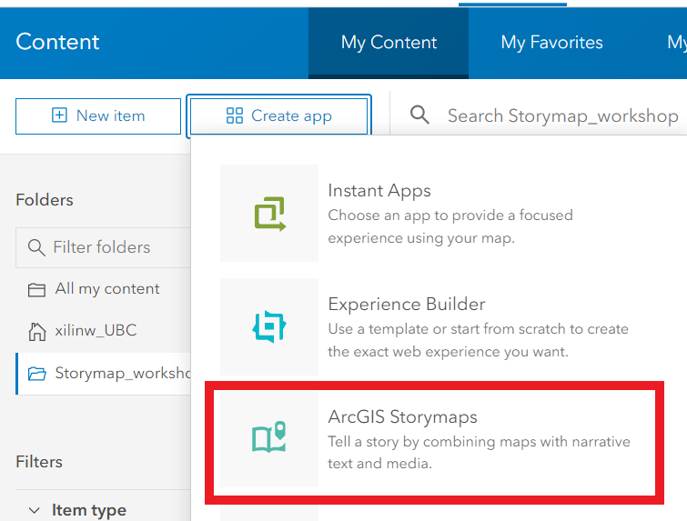
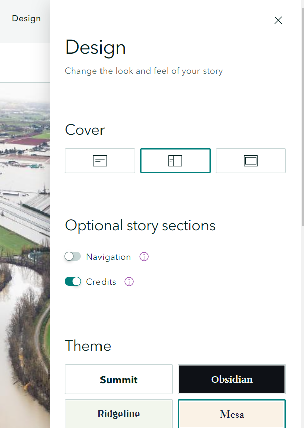
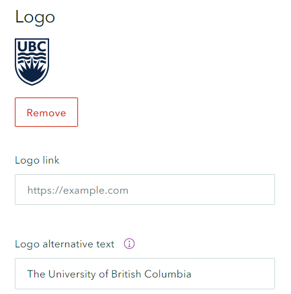
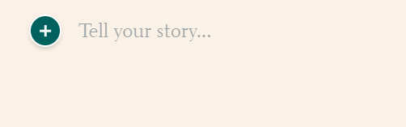
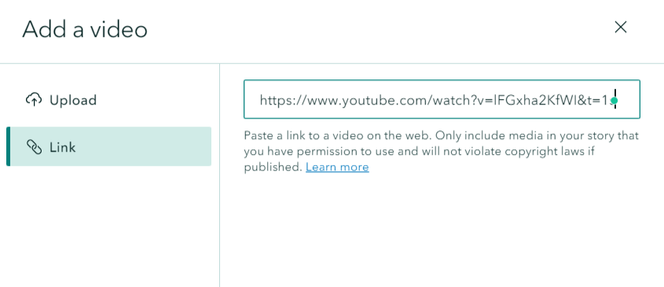
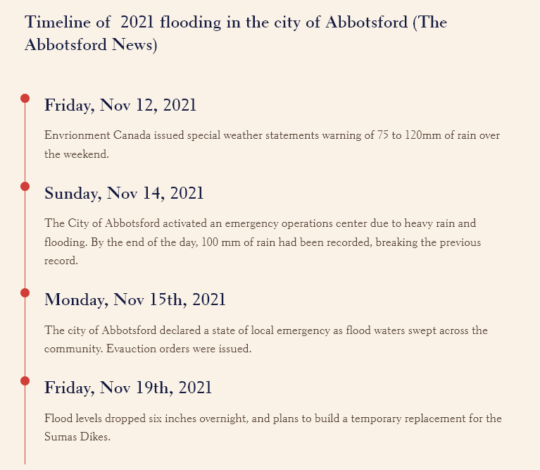
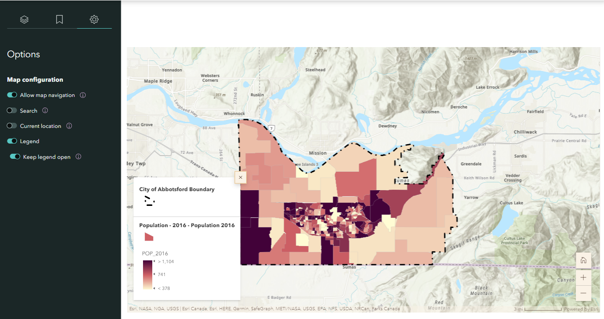
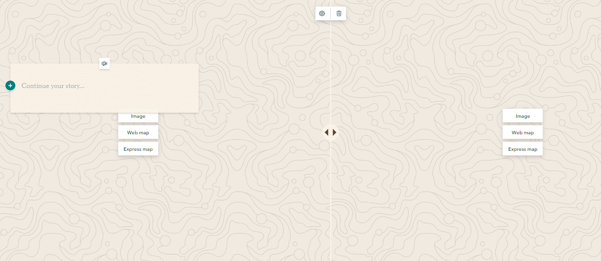
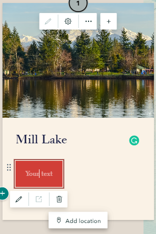

ArcGIS Online Storymap
To start a Storymap from scratch, go to Story Maps and click on New Story.
Or from the top left of your web map, click on the three horizontal lines dropdown arrow and then right-click on Content. Click on the Create app and select ArcGIS Storymaps.

The Storymap Content blocks and features will be covered in this section:
- Configure themes and add a logo
- Preview the Storymap
- Add basic features
- Add title, subtitle, and Text
- Add a Botton
- Add a Separator
- Embed media
- Image
- Video
- Add a web map
- Swipe
- Timeline
- Embed immersive content
- Sidecar
- map tour
- Slideshow
- Publish and share the story map
Configure design and add a logo
1 Click the Design on the top of the page. It will pop up a panel that allows us to select the style of cover page, optional story sections (e.g Navigation, credits) and theme. Feel free to select the cover and theme that works for your topic.

1 Scroll down the Design panel, you can upload a logo for your institution or project. Click the Upload Logo and select the ubc logo in the downloaded .zip file. You can provide an alternative text, in case the image does not load appropriately.

2 Another tab on the top of the page is the Preview, it allows you to preview the Storymap from user interface on different devices (e.g. PC, Tablet and phone).
3 Now add “The City of Abbotsford” as a title, and “A Flood Analysis in the city of Abbotsford, BC” as a subtitle.
4 Insert a image for the cover page from local files. You can use the prepared cover image in the downloaded .zip file or use your own image.

5 Click the green plus botton to add a text content block. Then, add the following descriptive text about the city of Abbotsford floods.
“In November 2021, Abbotsford experienced one of Canada’s largest flooding disasters when the Nooksack River overflowed and breached its dyke and floodwater headed straight to Abbotsford, flooding Sumas Prairie. This event forced the closure of the US/Canada Border and Highway 1, effectively stopping the flow of people, goods and services and led to a significant loss of livestock and poultry, as well as the evacuation of over 1,100 properties and over 3,300 people from their homes” (The city of Abbotsford).”

6 Click the green plus botton again and select video. You can upload videos from local devices or insert a link. Insert this link https://www.youtube.com/watch?v=lFGxha2KfWI&t=1s to add a Youtube video to the Storymap.

7 Click the green plus botton and select Timeline to illustrate a series of events choronolgically. There are three timeline layout, choose Single side for this case.
Add following texts for the timeline:
Timeline of 2021 flooding in the city of Abbotsford (The Abbotsford News)
- Friday, Nov 12, 2021
- Envrionment Canada issued special weather statements warning of 75 to 120mm of rain over the weekend.
- Sunday, Nov 14, 2021
- The City of Abbotsford activated an emergency operations center due to heavy rain and flooding. By the end of the day, 100 mm of rain had been recorded, breaking the previous record.
- Monday, Nov 15th, 2021
- The city of Abbotsford declared a state of local emergency as flood waters swept across the community. Evauction orders were issued.

8 Click the green plus botton and select sidecar to add an immersive block with media panel and narrative panel. There are three layouts of sidecar, Docked, Floating and Slideshow. Feel free to select any of them work best for your story, but select Docked for this workshop.
9 Click the green plus botton inside sidecar narrative panel and select text to add some population data about the city of Abbotsford:
About Abbotsford
Area: 375.6 km2
Population: 149,928
Population density: 399 residents per km2
10 Click the Add inside the media panel and select Map to add the Population of the City of Abbotsford web map created in previous section. Then, adjust the map extent and click Options on the left sidebar to display the legend of the map. 
11 Add a new slide by clicking the green plus button in the side bar. Then, repeat Step 10 and 11 for the “Flood Risk of the City of Abbotsford** and add the descriptive text below:
Floods are common on the West coast of Canada and can happen any time of the year. Thus, it is significant for residents to be prepared for future flooding events. The flood risk map illustrates the flood risk of the city of Abbotsford in five levels: low, mid-low, medium, mid-high, and high.
12 Click the green plus botton and select sidecar to add a full-screen, media-focused layout with minimal accompanying text. Click the Add and select Swipe let readers easily compare two maps or images with an interactive slider. Add the before and after floods image provided in the downloaded .zip. Then,Click the textbox and add the following descriptive text:
What you should do if you must evacuate?
Always follow the instruction of local emergency officials Ensure each family member has waterproof clothing and footwear Lock all doors and windows and ensure gas, eletricity and water are shut off (the City of Abbotsford)

13 Add a new slide by clicking the green plus button in the side bar. Then, click the add and select color to change the background to a single color and add the descriptive text below:
What should you do after a flood?
Check if the water supply is safe to drink Avoid floodwaters since it may be contaminated or electrically charged Return home only when authorities indicate it is safe Contact insurance and utility companies
14 Click the green plus botton on the main page and select separator to break your content into clear sections with a subtle visual cue.
15 Let us explore some Tourism Attraction in the city of Abbotsford. Click the green plus botton on the main page and select map tour to showcase a set of places your readers can explore in any order, or be led through one at a time. Choose start from scratch and guided and map focus as layout. Click the add image to Add your prepared image here or insert a link: https://www.flickr.com/photos/spetersongallery/38464945140
16 Click the green plus botton within the text box to add a title Mill Lake and add “Take me to Google Street View” into a Botton. You use google map to find the Google Street View of Mill Lake, and copy the link to the Botton. Then, click add location and search and add the location of Mill Lake, BC to the map

17 Add a new slide by clicking the green plus button in the side bar. Then, repeat Step 15 and 16 to add one more tourism attraction in the city of Abbotsford by yourself.
The Map Options on the top right corner of Map Tour can adjust the map appearance, such as zoom level, basemap, point color and map type (2D or 3D).
Check out the example Storymap